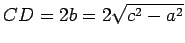

Inhalt Index DeskTop Bronstein

 Geometrie Vektoralgebra und analytische Geometrie Analytische Geometrie der Ebene
Geometrie Vektoralgebra und analytische Geometrie Analytische Geometrie der Ebene


In der Abbildung sind AB = 2a die reelle Achse; A,B die Scheitel; 0 der Mittelpunkt; F1 und F2 die Brennpunkte im Abstand c > a auf der reellen Achse zu beiden Seiten vom Mittelpunkt;  die imaginäre Achse; p =b2 /a der Halbparameter der Hyperbel, d.h. die halbe Länge der durch einen der Brennpunkte senkrecht zur rellen Achse gelegten Sehne; e = c/a > 1 die numerische Exzentrizität.